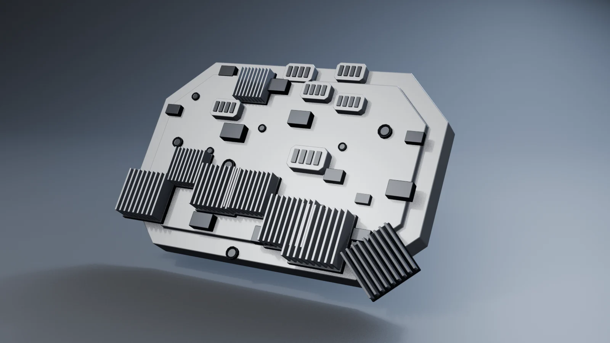
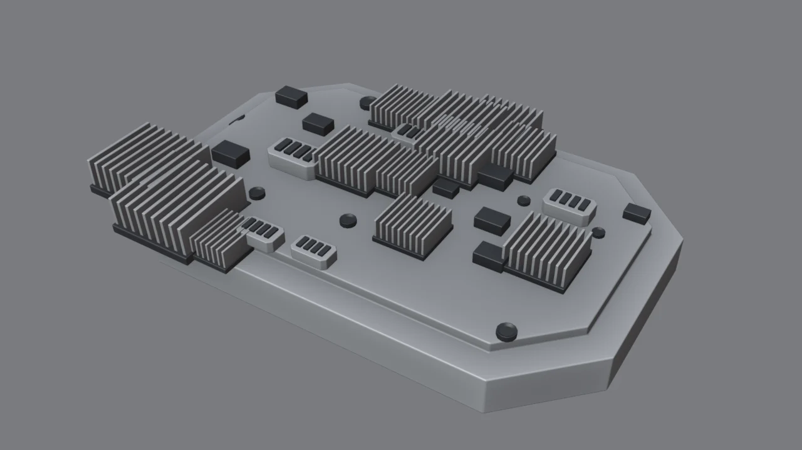
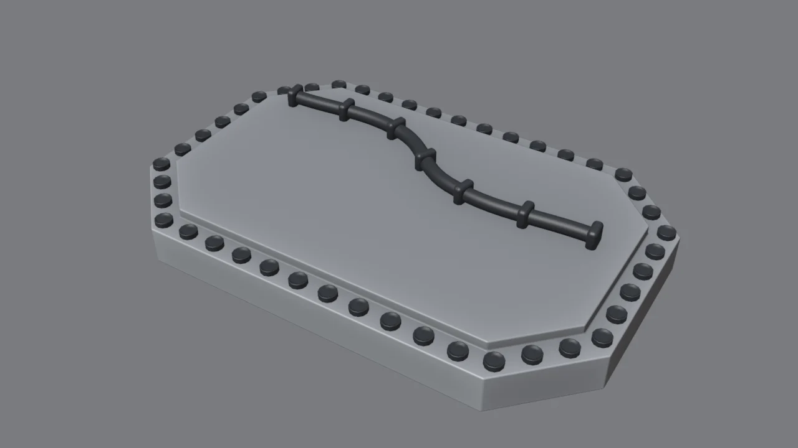

Lo que vas a forjar // objetivo

Construirás tres «máquinas» reutilizables: un repartidor de greebles, una remachadora que sigue una curva y un generador de tuberías con abrazaderas.
Cómo piensa Geometry Nodes // concepto
Es un modificador como Bevel o Array, pero lo programas tú con nodos. La geometría entra por la izquierda (Group Input), pasa por los nodos y sale por la derecha (Group Output). Tres ideas clave:
Puntos
Primero se generan puntos (sobre caras o a lo largo de curvas). Son posiciones, no se ven en el render.
Instancias
En cada punto se pone una copia ligera de una pieza. Miles de copias apenas gastan memoria.
Campos
Valores que cambian en cada punto: la normal, un número aleatorio… Por eso cada pieza puede ser distinta.
Dónde se hace: workspace Geometry Nodes (pestaña de arriba) → selecciona tu objeto → New. Los nodos se añaden con Shift+A o escribiendo su nombre tras pulsar Shift+A y empezar a teclear.
Tu kit en una colección
- Crea una colección
Kit Greeblescon 4–6 piezas pequeñas: conector, disipador, caja y tornillo (módulo 5, o los botones de Forja Tools). - Cada pieza, en el origen (0, 0, 0) y apoyada en Z = 0: así se asentará sobre la superficie.
- Si una pieza tiene varias partes, únelas con Ctrl+J.
- Desmarca la casilla de la colección en el Outliner (excluir): no se ve en la escena, pero los nodos sí la pueden usar.
El repartidor de greebles
- Distribute Points on Faces en modo Poisson Disk: reparte puntos sin que se amontonen (Distance Min).
- Collection Info con tu kit y Separate Children y Reset Children activados.
- Instance on Points: Points ← los puntos, Instance ← la colección, Pick Instance ✓ (elige una pieza distinta en cada punto), Rotation ← la salida Rotation de Distribute (cada pieza se alinea con la superficie).
- Random Value (Integer, de 0 a nº de piezas − 1) → Instance Index. Otro Random Value (Float, 0.7–1.3) → Scale.
- Join Geometry con la placa original, para que no desaparezca, → Group Output.
Expón los controles: arrastra Density o Seed hasta el borde izquierdo libre del Group Input. Aparecen como deslizadores en el panel del modificador y no tendrás que abrir los nodos para ajustarlos.
Solo en las caras que miran hacia arriba
Sin control, saldrían piezas en los laterales y por debajo. La solución es un campo:
- Normal → Separate XYZ → Compare (Z Greater Than 0.9) → entrada Selection de Distribute.
- Así solo cuentan las caras cuya normal apunta casi recta hacia arriba. Con 0.5 aceptarías también caras inclinadas.
Esto es un campo: la comparación se evalúa en cada cara por separado. Es la idea más potente de Geometry Nodes, la misma con la que podrías poner remaches solo en los bordes o luces solo en las caras que miran a cámara.
Variedad con la semilla

La semilla (Seed) cambia el reparto aleatorio sin cambiar la regla. Prueba varias y quédate con la que deje mejores zonas de descanso. Los nodos no tienen criterio estético: lo pones tú.
Remaches a lo largo de una curva

- Dibuja una curva que siga el marco: Shift+A → Curve, o duplica las aristas del borde (Shift+D, P) y conviértelas con
Object → Convert → Curve. - Geometry Nodes en la curva: Resample Curve (Count 44) → Instance on Points con un Object Info del remache → Realize Instances.
- Cambia Count y los remaches se reparten solos, siempre equidistantes. Mueve un punto de la curva y todos lo siguen.
Tuberías con abrazaderas
- Una curva Bézier por donde quieras la tubería.
- Curve to Mesh con un Curve Circle como perfil (Radius = grosor) → Set Shade Smooth.
- En paralelo: Resample Curve (7) → Instance on Points con la abrazadera. Para que se orienten con el tubo: Curve Tangent → Align Euler to Vector (eje X) → Rotation.
- Join Geometry de tubo y abrazaderas.
¿Por qué no un cable del módulo 5? Aquí el grosor, el número de abrazaderas y su pieza son parámetros. Con el árbol hecho, cada tubería nueva es dibujar una curva y asignarle el mismo grupo de nodos.
File → Append → NodeTree.Cuándo usarlo (y cuándo no) // criterio
| ✔ Geometry Nodes | ✘ Mejor a mano |
|---|---|
| Muchas piezas pequeñas repetidas: remaches, tornillos, greebles de fondo | Las piezas protagonistas: el núcleo, el visor, el mecanismo del arma |
| Cosas que siguen una regla: «cada 5 cm», «solo arriba» | Composición con intención: dónde va el punto focal |
| Variantes rápidas para probar ideas | Una pieza única que vas a ver de cerca |
Rendimiento: mientras trabajas, deja las instancias sin realizar (sin Realize Instances): ocupan muchísimo menos. Realízalas solo si las vas a editar a mano o exportar.